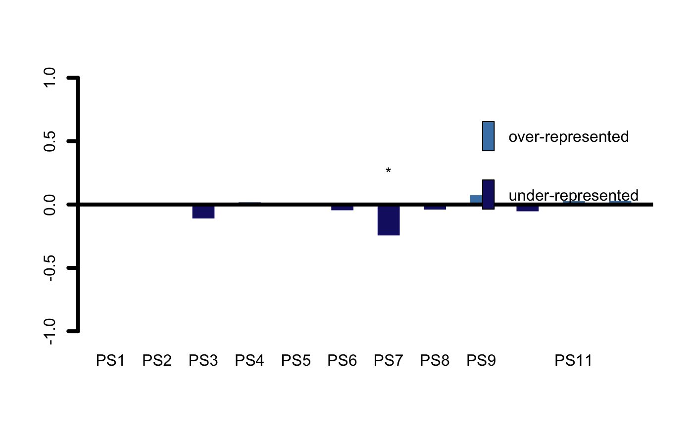
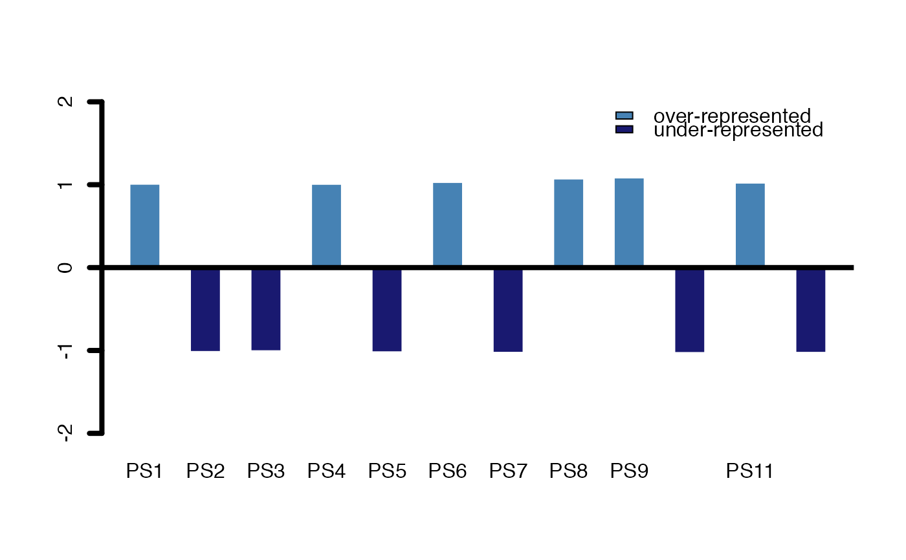
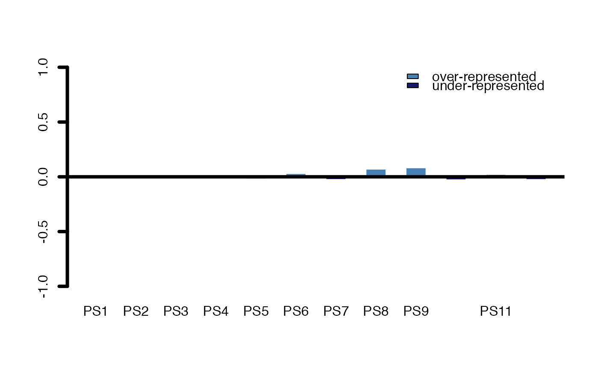
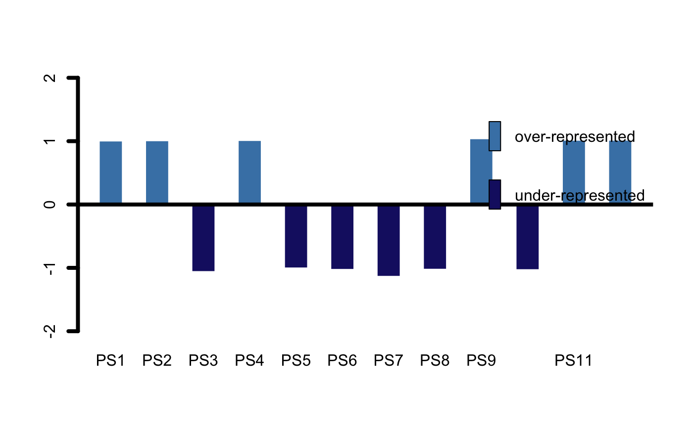

R/PlotEnrichment.R
PlotEnrichment.RdThis function computes and visualizes the significance of enriched (over or underrepresented) Phylostrata or Divergence Strata within an input test.set.
PlotEnrichment(ExpressionSet, test.set, use.only.map = FALSE, measure = "log-foldchange", complete.bg = TRUE, legendName = "", over.col = "steelblue", under.col = "midnightblue", epsilon = 1e-05, cex.legend = 1, cex.asterisk = 1, plot.bars = TRUE, p.adjust.method = NULL, ...)
| ExpressionSet | a standard PhyloExpressionSet or DivergenceExpressionSet object (in case |
|---|---|
| test.set | a character vector storing the gene ids for which PS/DS enrichment analyses should be performed. |
| use.only.map | a logical value indicating whether instead of a standard |
| measure | a character string specifying the measure that should be used to quantify over and under representation of PS/DS. Measures can either be |
| complete.bg | a logical value indicating whether the entire background set
of the input |
| legendName | a character string specifying whether "PS" or "DS" are used to compute relative expression profiles. |
| over.col | color of the overrepresentation bars. |
| under.col | color of the underrepresentation bars. |
| epsilon | a small value to shift values by epsilon to avoid log(0) computations. |
| cex.legend | the |
| cex.asterisk | the |
| plot.bars | a logical value specifying whether or not bars should be visualized or whether only |
| p.adjust.method | correction method to adjust p-values for multiple comparisons (see |
| ... | default graphics parameters. |
This Phylostratum or Divergence Stratum enrichment analysis is motivated by Sestak and Domazet-Loso (2015) who perform Phylostratum or Divergence Stratum enrichment analyses to correlate organ evolution with the origin of organ specific genes.
In detail this function takes the Phylostratum or Divergence Stratum distribution of all genes stored in the input ExpressionSet as background set and
the Phylostratum or Divergence Stratum distribution of the test.set and performes a fisher.test for each Phylostratum or Divergence Stratum to quantify the statistical significance of over- or underrepresentated Phylostrata or Divergence Strata within the set of selected test.set genes.
To visualize the odds or log-odds of over or underrepresented genes within the test.set the following procedure is performed:
N_ij denotes the number of genes in group j and deriving from PS i, with i = 1, .. , n and where j = 1 denotes the background set and j = 2 denotes the test.set
N_i. denotes the total number of genes within PS i
N_.j denotes the total number of genes within group j
N_.. is the total number of genes within all groups j and all PS i
f_ij = N_ij / N_.. and g_ij = f_ij / f_.j denote relative frequencies between groups
f_i. denotes the between group sum of f_ij
The result is the fold-change value (odds) denoted as C = g_i2 / f_i. which is visualized above and below zero.
In case a large number of Phylostrata or Divergence Strata is included in the input
ExpressionSet, p-values returned by PlotEnrichment should be adjusted for
multiple comparisons which can be done by specifying the p.adjust.method argument.
Sestak and Domazet-Loso (2015). Phylostratigraphic Profiles in Zebrafish Uncover Chordate Origins of the Vertebrate Brain. Mol. Biol. Evol. 32(2): 299-312.
data(PhyloExpressionSetExample) set.seed(123) test_set <- sample(PhyloExpressionSetExample[ , 2],10000) ## Examples with complete.bg = TRUE ## Hence: the entire background set of the input ExpressionSet is considered ## when performing Fisher's exact test # measure: log-foldchange PlotEnrichment(ExpressionSet = PhyloExpressionSetExample, test.set = test_set , legendName = "PS", measure = "log-foldchange")#> $p.values #> PS1 PS2 PS3 PS4 PS5 PS6 PS7 #> 0.68771282 0.45306323 0.08095321 0.51414436 0.97148218 0.27478755 0.03204539 #> PS8 PS9 PS10 PS11 PS12 #> 0.71071584 0.41062985 0.33163365 0.82260340 0.44749411 #> #> $enrichment.matrix #> BG_Set Test_Set #> PS1 -0.004013721 0.006103497 #> PS2 -0.009421917 0.014260287 #> PS3 0.070249042 -0.114260412 #> PS4 -0.014434359 0.021752197 #> PS5 0.002585053 -0.003953739 #> PS6 0.031468144 -0.049383568 #> PS7 0.142016032 -0.247865603 #> PS8 0.027940831 -0.043708747 #> PS9 -0.052813240 0.077041531 #> PS10 0.036470542 -0.057494017 #> PS11 -0.020107047 0.030153208 #> PS12 -0.021160867 0.031704875 #># measure: foldchange PlotEnrichment(ExpressionSet = PhyloExpressionSetExample, test.set = test_set , legendName = "PS", measure = "foldchange")#> $p.values #> PS1 PS2 PS3 PS4 PS5 PS6 PS7 #> 0.68771282 0.45306323 0.08095321 0.51414436 0.97148218 0.27478755 0.03204539 #> PS8 PS9 PS10 PS11 PS12 #> 0.71071584 0.41062985 0.33163365 0.82260340 0.44749411 #> #> $enrichment.matrix #> BG_Set Test_Set #> PS1 0.9972217 1.004240 #> PS2 0.9934903 1.009934 #> PS3 1.0499140 -1.082449 #> PS4 0.9900438 1.015193 #> PS5 1.0017940 -1.002745 #> PS6 1.0220552 -1.034828 #> PS7 1.1035387 -1.187648 #> PS8 1.0195738 -1.030789 #> PS9 0.9640288 1.054892 #> PS10 1.0256084 -1.040668 #> PS11 0.9861409 1.021149 #> PS12 0.9854374 1.022223 #>## Examples with complete.bg = FALSE ## Hence: the test.set genes are excluded from the background set before ## Fisher's exact test is performed # measure: log-foldchange PlotEnrichment(ExpressionSet = PhyloExpressionSetExample, test.set = test_set , complete.bg = FALSE, legendName = "PS", measure = "log-foldchange")#> $p.values #> PS1 PS2 PS3 PS4 PS5 PS6 PS7 PS8 #> 0.7866977 0.6270033 0.2553465 0.6573481 1.0000000 0.4761380 0.1507753 0.8196041 #> PS9 PS10 PS11 PS12 #> 0.5824149 0.5164466 0.8910157 0.6100468 #> #> $enrichment.matrix #> BG_Set Test_Set #> PS1 -0.001733622 0.004369875 #> PS2 -0.004058664 0.010201623 #> PS3 0.031496415 -0.082763996 #> PS4 -0.006202476 0.015549721 #> PS5 0.001120210 -0.002833530 #> PS6 0.013834678 -0.035548890 #> PS7 0.066079768 -0.181785836 #> PS8 0.012262194 -0.031446554 #> PS9 -0.022270692 0.054770838 #> PS10 0.016074318 -0.041419699 #> PS11 -0.008615890 0.021537317 #> PS12 -0.009062745 0.022642131 #># measure: foldchange PlotEnrichment(ExpressionSet = PhyloExpressionSetExample, test.set = test_set , complete.bg = FALSE, legendName = "PS", measure = "foldchange")#> $p.values #> PS1 PS2 PS3 PS4 PS5 PS6 PS7 PS8 #> 0.7866977 0.6270033 0.2553465 0.6573481 1.0000000 0.4761380 0.1507753 0.8196041 #> PS9 PS10 PS11 PS12 #> 0.5824149 0.5164466 0.8910157 0.6100468 #> #> $enrichment.matrix #> BG_Set Test_Set #> PS1 0.9987990 1.003034 #> PS2 0.9971906 1.007097 #> PS3 1.0220790 -1.059066 #> PS4 0.9957096 1.010838 #> PS5 1.0007770 -1.001967 #> PS6 1.0096372 -1.024951 #> PS7 1.0469121 -1.134430 #> PS8 1.0085436 -1.022057 #> PS9 0.9846708 1.038721 #> PS10 1.0112071 -1.029134 #> PS11 0.9940378 1.015061 #> PS12 0.9937370 1.015820 #>